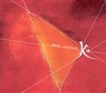

| Artist: | Karcius |
| Title: | Kaleidoscope |
| Label: | Unicorn Records UNCR-5032 |
| Length(s): | 57 minutes |
| Year(s) of release: | 2006 |
| Month of review: | [12/2006] |
| 2) | Maintenant | 6.02 |
| 4) | Tunnel | 7.11 |
| 5) | Hypothèse B | 11.02 |
| 7) | Épilogue | 6.35 |
| 8) | Hypothèse C | 7.56 |
The album starts of quite well, with a good build up of tension in the opening track. Unfortunately this building of tension does not lead to some sort of climax, rather it seems to get lost in some jazzy meandering, and at times dipping into clayderland, giving the track the multiple faces we will see all through the album.
The drums and bass seem to be mainly for timekeeping. Sure, those are the main roles, but that doesn't mean that drums so often have to be just a dry snap, that even the frequent changes in signature can not hide. The roar of the bass sometimes floats in the direction of a soothing purr, most of the time it's a bob that draws more attention to itself than is justified.
Even though the keyboards have some potential for leading the dance, the large majority of melodies is set down by guitar, mostly electric, sometimes even rhythm guitar. Despite Karcius being a band, this could have been an album by an enlightened guitarist. But there are good bits and pieces after all. The climax so dourly missed in the opening track is brought on in Destination, unfortunately from this climax on the music falls dead for a moment, and then goes off into a new direction, thus missing out on gently winding down.